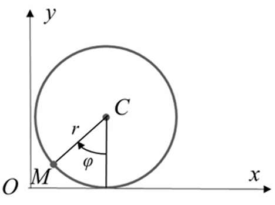
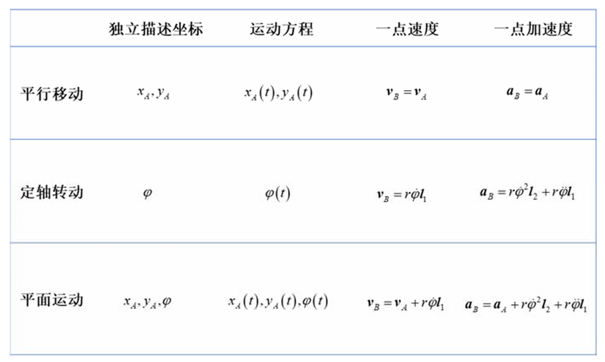
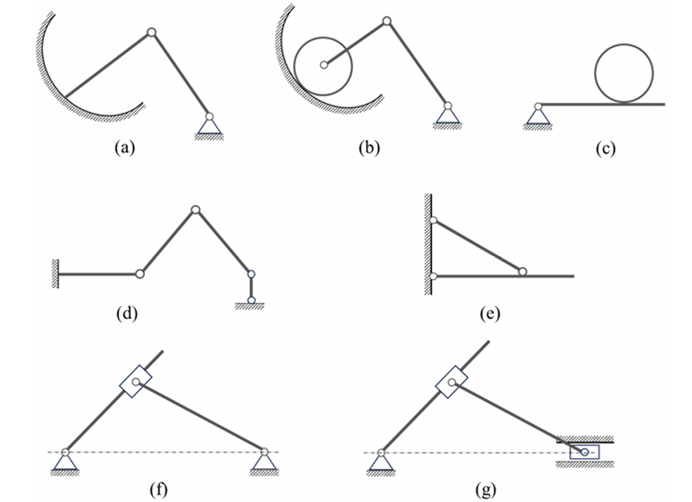

Chap1 运动，其描述与简化 ¶
本章纲要
-
点（系）的运动描述与简化：点的运动描述；点系的运动描述；约束与约束点系，独立描述坐标及其数目，由独立描述坐标表出系统的全部运动信息。
-
刚体（系）的运动描述与简化——过程标量分析方法：典型运动单刚体的独立描述坐标数目及其选择，由独立描述坐标表出单刚体的全部运动信息；刚体和外界以及刚体与刚体之间的典型约束；刚体系独立描述坐标数目及其选择，由系统的独立描述坐标表出各单刚体的独立描述坐标，进而表出各单刚体的全部运动信息。
-
刚体（系）的运动描述与简化——瞬时矢量分析方法：对典型运动的单刚体，由独立描述矢量表出全部运动信息；单刚体的运动分析方法；特殊刚体系的运动分析；点的合成运动定理；将单刚体运动分析方法与点的合成运动方法相结合，形成一般刚体系运动分析的瞬时矢量分析方法。
运动学的基本问题是：给定质点系（特别是刚体系
点（系）的运动描述与简化 ¶
点（系）的运动描述 ¶
点的运动方程、运动轨迹、速度、加速度可由矢径法和坐标法描述。
矢径法 ¶
一个点 M 在某一参考系中的位置可由如下方式描述。在参考系中选取一个固定点 \(O\)，由之向 \(M\) 点连出一条有向线段，
称为点 M 关于 O 点的矢径。
点 M 的位置随时间连续改变，相应地，矢径 \(\bm{r}\) 就是一个时间 \(t\) 的连续矢量函数，即，
这就是点的矢径形式的运动方程。
随着时间演进，矢端在参考系中划过的曲线就是点 \(M\) 的运动轨迹。
点 \(M\) 的速度定义为矢径 \(\bm{r}\) 对时间 \(t\) 的一阶导数，即，
其方位沿轨迹的切线，指向点的运动方向。
点 \(M\) 的加速度定义为速度矢量 \(\bm{v}\) 对时间 \(t\) 的一阶导数，即，
其方向指向轨迹的凹侧。
易知，尽管对于同一参考系上的不同固定点，刻画点 \(M\) 位置的矢径不同，给出的速度和加速度却是相同的。
坐标法 ¶
常用的坐标系包括笛卡尔直角坐标系、柱坐标系和球坐标系。
直角坐标法 ¶
在笛卡尔直角坐标系中，点 \(M\) 的位置由坐标 \((x,y,z)\) 确定。点 \(M\) 的位置随时间改变，三个坐标为时间的函数，即，
这就是点的直角坐标形式的运动方程。从这组方程中消去时间 \(t\)，即得到点 \(M\) 的轨迹方程。
取原点 \(O\) 为固定点，点 \(M\) 的矢径可表示为，
例题
圆轮沿平面纯滚。半径为 \(r\)，其一半径（固定在轮上）与竖直方向夹角 \(\varphi=\omega t\)。试写出轮缘上一点 \(M\) 的运动方程和轨迹方程，并给出点 \(M\) 恰与地面接触时的速度和加速度。

取点 \(M\) 与地面接触时地面上的那个接触点为原点，建立直角坐标系。\(M\) 点的运动方程可表示为，
从两式中消去时间 \(t\)，即得轨迹方程，
运动方程对时间求一次导和二次导，
当时间 \(t\) 趋于零时，点 \(M\) 恰与地面接触，此时有，
可以得到以下结论：
两点无滑接触，接触两点的速度相同，接触两点的加速度在公切线方向上的投影相等。
点 \(M\) 所描绘出的轨线，在与地面接触处的切线沿竖直方向。
柱坐标法 ¶
点的柱坐标形式的运动方程，即，
取原点 \(O\) 为固定点，点 \(M\) 的矢径可表示为：
球坐标法 ¶
点的球坐标形式的运动方程，即，
取原点 \(O\) 为固定点，点 \(M\) 的矢径可表示为：
注意到，柱坐标系中当 \(z\) 恒等于零时，以及球坐标系中当 \(\theta\) 恒等于 \(\pi/2\) 时，均退化为极坐标系。
弧坐标法 ¶
若给定点 \(M\) 的轨迹，我们可以在轨迹上取定一点 \(M_0\)，并规定度量的正方向，这样，就能通过点 \(M\) 到取定点 \(M_0\) 的弧长值来确定其位置，即，
这就是点 \(M\) 的弧坐标形式的运动方程。轨迹方程和弧坐标方程共同给出了点的运动的完全信息。
为了表出点的速度和加速度，我们取定自然轴系，于是有，
考察单位矢量 \(\bm{\tau}\) 对时间的导数，易知，
上式右端第一项反映速度大小的变化率，称为切向加速度，记为 \(\bm{a}_\tau\)；第二项反映速度方向的变化率，称为法向加速度，记为 \(\bm{a}_n\)。于是有，
点系的运动描述 ¶
点系的速度和加速度描述可由各点的速度和加速度并置而得。
约束点系的初等理论 ¶
对于自由点系（即不受限制的点系
约束概念 ¶
所谓约束，即限制、关联——预先设定的限制位置和运动的条件。所谓约束方程，即这些限制条件的数学表达式，预先设定的存在于位置、位置导数（速度）之间的关系式。
在此，我们局限于讨论对位置的时不变等式限制：所谓“位置”是指，仅限制位置关系，而无涉运动（即位置导数，速度
刚性杆（不变形的细长杆件）连接，是点和点之间的典型约束。它限制两点间的距离始终保持不变，约束方程为，
根据当前定义，弹性线不是约束，因为其并未严格限制点和点之间的位置关系。
在力学中
约束点系 ¶
约束点系是指受到约束的点系。\(N\) 个点构成的点系有 \(3N\) 个描述坐标，每增加一个约束方程（要求各约束方程相容且独立
点系中任一点的位置可由独立描述坐标完全刻画；任一点的速度可由独立描述坐标及其一阶导数共同表出；任一点的加速度可由独立描述坐标、其一阶导数和二阶导数共同表出。这一结论在运动学中具有基本的重要性。
刚体（系）的运动描述与简化——过程标量分析方法 ¶
刚体的构成、独立描述坐标的数目和选择 ¶
单刚体的独立描述坐标数目为 6。
刚体可视为由刚性杆联系在一起的不变点系，与之相应，可变形连续体可视为由弹性线（或非刚性线）联系在一起的可变点系。
单刚体的典型运动模式，其描述与简化 ¶
单刚体的典型运动模式包括：平行移动、定轴转动、平面运动、定点运动和一般运动。

平行移动 ¶
所谓平行移动（简称平移）是指：刚体运动过程中，其上任一直线始终与其初始位置保持平行（对选定的参考系而言
平移刚体的转动受到限制，因此，用其上一点的三个坐标就能刻画刚体上任一点的位置。因此，独立描述坐标数目为 3，可取为其上任一点的三个直角坐标。
若为平面平移，独立描述坐标数目为 2。
给出定义：若某瞬时刚体上各点的速度相等，则称刚体作瞬时平移。
定轴转动 ¶
所谓定轴转动是指：刚体运动过程中，其上或其延展体上有一条直线始终保持不动（对选定的参考系而言
定轴转动刚体的独立描述坐标数目为 1。
平面运动 ¶
所谓平面运动是指，刚体运动过程中，存在一个固定（对选定的参考系而言）平面，刚体上任一点到该平面的距离保持不变。值得指出，定轴转动是平面运动的特例；但平行移动和平面运动之间并无包含关系，平面平移是平面运动，但一般平移不是平面运动。
平面运动刚体的独立描述坐标数目为 3。
刚体的典型约束 ¶
典型约束包括：接触式、铰联式、固定式、连杆式、滑移式。
接触式约束 ¶
所谓接触式约束，即刚体与外界给定曲线（对平面问题）或给定曲面（对空间问题）或者刚体与刚体之间，发生且始终发生接触。
对于平面问题：如果能发生打滑，与给定曲线接触的刚体的独立描述坐标数目减 1，两接触刚体的独立描述坐标数目同样减 1；如果不能打滑而是纯滚，与给定曲线接触的刚体的独立描述坐标数目减 2，两接触刚体的独立描述坐标数目同样减 2。
对于空间问题：如果能发生打滑，与给定曲面接触的刚体的独立描述坐标数目减 1，两接触刚体的独立描述坐标数目同样减 1；如果不能打滑，与给定曲面接触的刚体的独立描述坐标数目减 2，两接触刚体的独立描述坐标数目同样减 2。
铰联式约束 ¶
所谓铰联式约束，即通过一个铰链将刚体与外界或者刚体与刚体联结起来的约束。
易知，固定铰链使单刚体的独立描述坐标数目减 2，中间铰链使两个刚体的独立描述坐标数目减 2，可动铰链使单刚体的独立描述坐标数目减 1。
固定式约束 ¶
所谓固定式约束，即将刚体的一部分完全固定起来（与外界固结
易知，对于平面问题，刚体的独立描述坐标数目减 3（限制刚体两个位移和一个转角
连杆式约束 ¶
所谓连杆式约束，是指通过一根刚性杆实现的约束，刚性杆一端用铰链与外界不动构件相连，另一端用铰链与刚体相连。
对于平面问题，刚体的独立描述坐标数目减 1；对于空间问题，刚体的独立描述坐标数目减 1。刚体上受连杆约束的那个点，其坐标满足圆或球面方程，其速度沿所在位置的切线或切面方向。
滑移式约束 ¶
所谓滑移式约束是指，两个刚体通过一个套筒联系在一起，其中一个刚体与套筒铰联，另一个刚体从套筒中穿过，可与套筒相对滑动；其等效模式是，两个刚体通过滑块和滑道联系在一起，其中一个刚体与滑块铰联，另一个刚体上开有滑槽，滑块可沿滑槽运动。
对于平面问题，若能发生打滑，两刚体的独立描述坐标数目减 1。此类约束多可发生打滑，如果不能发生打滑，则退化为铰联式约束。
约束切换问题 ¶
某约束在一个阶段起作用，而在另一个阶段不起作用， 即在一个阶段存在此约束，而在另一个阶段不存在此约束，这就是约束切换问题。此处，我们常采用“添加约束”或者“解除约束”这样的术语描述这一现象。
刚体系独立描述坐标数目的计算和选择 ¶
独立描述坐标数目 = 2\(\times\) 平移刚体数 + 1\(\times\) 定轴转动刚体数 + 3\(\times\) 平面运动刚体数 - N（由于约束减少的独立描述坐标数目）
例题

结构和机构 ¶
如果系统中（独立）约束的数目足够多，就会导致该系统不具有运动的可能性；如果（独立）约束的数目不够多，该系统就可以运动。据此，我们定义机构和结构的概念：所谓机构，即在几何上可以发生运动的刚体系；所谓结构，即在几何上不能发生运动的刚体系。我们知道，当约束数目恰好使刚体系的独立描述坐标数目等于零时，该系统刚好不具有运动的可能性。以之为基准，若约束数目少了，该系统就是机构，所少的个数即为独立描述坐标数目，可称为约束欠缺度；若约束数目多了，该系统还是结构，所多的数目可称为约束冗余度。
系统的独立描述坐标，是指能完全刻画系统位置的独立坐标。所谓“完全”表明不缺少（充分
刚体（系）的运动描述与简化——瞬时矢量分析方法 ¶
典型运动单刚体的矢量分析 ¶
平行移动 ¶
定轴转动 ¶
平面运动 ¶
速度基点法 ¶
加速度基点法 ¶
速度投影法 ¶
加速度投影法 ¶
应用——平面机构的运动分析（之一）¶
点的合成运动分析 ¶
应用——简单问题、平面机构的运动分析（之二）¶
评论区